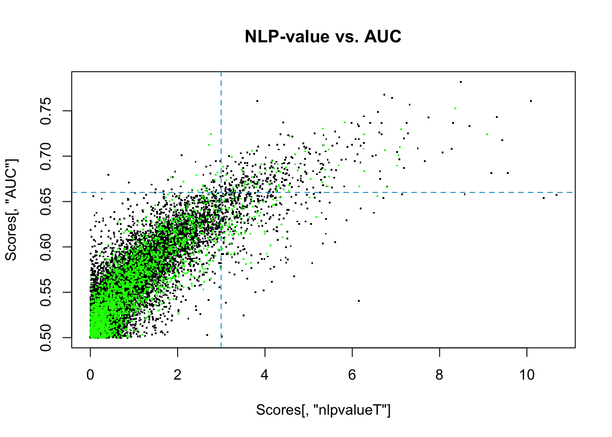
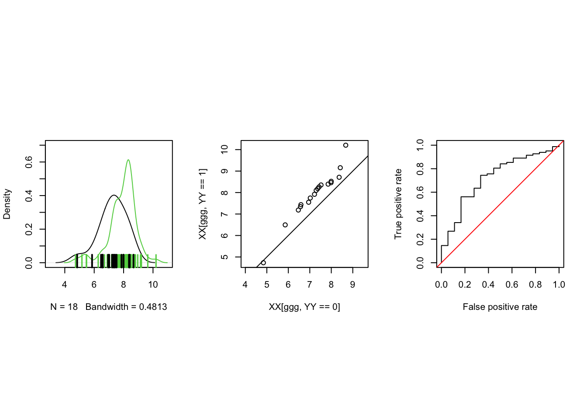

library(curatedOvarianData)
library(ROCR)
data(TCGA_eset)
XX = as.matrix(cbind(exprs(TCGA_eset)))
YY = 1 * as.vector(pData(TCGA_eset)[,"debulking"]=="optimal")
XX = XX[,!is.na(YY)];
YY = YY[!is.na(YY)]
XXX = XX
YYY = YY
# subset
subs = 1:100
XX = XX[,subs]; YY = YY[subs]Lecture 9 (February 21, 2023) Comparing Criteria for Biomarker Discovery
Comparing Criteria for Biomarker Discovery
With this lecture we move to the search for promising biomarkers in high dimension. This task is implicity in most variable selection and machine learning methodologies. Here we will dissect it in a more basic and exploratory way.
Data
We will start by going back to the TCGA_eset dataset and again consider the debulking variable. From before, this is a binary variable with optimal and suboptimal debulking. We will code an optimal debulking status as \(1\) and \(0\) otherwise. The biomarkers are on the continuous gene expression scale. We let XXX and YYY denote the biomarkers on the full set of patients, while XX and YY represent the biomarkers for the first 100 patients. For this analysis we remove any NA’s from both the response and gene expression predictor variables. In real applications we may consider imputation.
Three Scores
What we have next is the CompScores() function. This function will compute the AUC, the negative log p-value, fold change, and the residual error associated with each gene on the subset of patients. The fold change is the difference in means, so names becasue the expression measurements in the Affy platform have been logged as part of the preprocessing. The residual error considers deviations of biomarker values from their class-specific means, and it includes two general sources of variation: expression measurement error and patient-to-patient variation.
These are only a few of the scores one can compute, of course. A good way to contribute to the discussion is to add your favorite metric to the mix and start exploring.
Now we run the function on the first 100 patients. We save the full set for later.
source("RScripts/Scores.R")
Scores = CompScores(XX,YY)We will now focus on the sample of 100 first. To begin, we threshold negative log p-value at \(4.25\), AUC at \(0.66\), and the fold change at \(0.5\) and tabulate the results. TRUE and FALSE refer to whether the score exceeds the cutoff.
pcut = 4.25
acut = .66
fcut = .5
table( abs(Scores[,"FoldChange"])>fcut ,
Scores[,"nlpvalueT"]>pcut,
Scores[,"AUC"]>acut, dnn = c("FoldChange","nlpvalueT","AUC")), , AUC = FALSE
nlpvalueT
FoldChange FALSE TRUE
FALSE 12514 56
TRUE 118 7
, , AUC = TRUE
nlpvalueT
FoldChange FALSE TRUE
FALSE 203 158
TRUE 24 24
Note
- Did you expect more agreement? Less?
For later use.
allTrue = abs(Scores[,"FoldChange"])>fcut &
Scores[,"nlpvalueT"]>pcut & Scores[,"AUC"]>acut
aucOnly = abs(Scores[,"FoldChange"])<fcut &
Scores[,"nlpvalueT"]<pcut & Scores[,"AUC"]>acut
pOnly = abs(Scores[,"FoldChange"])<fcut &
Scores[,"nlpvalueT"]>pcut & Scores[,"AUC"]<acut
fcOnly = abs(Scores[,"FoldChange"])>fcut &
Scores[,"nlpvalueT"]<pcut & Scores[,"AUC"]<acut
lowresi = (1:nrow(Scores))[Scores[,"ResiErr"]<.5^2]
highauc_lowresi <- rownames(Scores[Scores[,"ResiErr"]<.5 & Scores[,"AUC"]>acut,])
lowauc_lowresi <- rownames(Scores[Scores[,"ResiErr"]<.5 & Scores[,"AUC"]<acut,])
highauc_higherresi <- rownames(XX[which(Scores[,"ResiErr"]>.8 & Scores[,"AUC"]>acut,)])Pairwise Comparisons of Scores
library(GGally)
lowresi = Scores[,"ResiErr"]<.25
plotme = cbind(Scores,lowresi)
ggpairs(plotme,
columns = 1:4,
aes(color = plotme[,5],alpha=.7),
lower = list(continuous = wrap("points", alpha = 0.05)))
Note
- are the residual error and fold change correlated? Are they independent?
AUC and Fold Change
par(pty = "m")
plot(Scores[,"FoldChange"],Scores[,"AUC"],pch=".", cex = 2)
points(Scores[lowresi,"FoldChange"],Scores[lowresi,"AUC"],col="green",pch=".", cex = 2)
abline(h = acut, lty = "dashed", col = "deepskyblue3")For three specific biomarkers from each of the lists above, we will now plot their empirical densities. This will allow us to better understand how it is possible to have a low variance but high score in the AUC. Furthermore, what a biomarker with a high AUC but also a high variance looks like.
ACADM = XX["ACADM",]
Scores["ACADM",] AUC nlpvalueT FoldChange ResiErr
ACADM 0.6802168 3.919139 -0.4339855 0.6550141plot(density(ACADM[YY==1]),xlab=c("Log Expression","ACADM"),main = "", col= "blue")
lines(density(ACADM[YY==0]), col="green")
rug(ACADM[YY==0],ticksize = .1,lwd=2, col = "green")
rug(ACADM[YY==1],ticksize = .1,lwd=2, col = "blue")A4GNT = XX["A4GNT",]
Scores["A4GNT",] AUC nlpvalueT FoldChange ResiErr
A4GNT 0.50271 0.4490836 0.01979107 0.1715732plot(density(A4GNT[YY==0]),xlab=c("Log Expression","A4GNT"),
main = "",ylim=c(0,3), col= "green")
lines(density(A4GNT[YY==1]), col="blue")
rug(A4GNT[YY==0],ticksize = .1,lwd=2, col = "green")
rug(A4GNT[YY==1],ticksize = .1,lwd=2, col = "blue")This is a tyrosine kinase.
ARHGAP33 = XX["ARHGAP33",]
Scores["ARHGAP33",] AUC nlpvalueT FoldChange ResiErr
ARHGAP33 0.6944444 2.975095 -0.4351615 0.7970158plot(density(ARHGAP33[YY==0]),xlab=c("Log Expression","ARHGAP33"),main = "",ylim=c(0,1), col= "green")
lines(density(ARHGAP33[YY==1]), col="blue")
rug(ARHGAP33[YY==0],ticksize = .1,lwd=2, col = "green")
rug(ARHGAP33[YY==1],ticksize = .1,lwd=2, col = "blue")Negative Log P-Value and Fold Change.
The following plot, sometimes called a volcano plot, is the negative log p-value against the fold change. The blue dotted horizontal line corresponds to where an \(\alpha = 0.05\) significance level would sit. Everything above the blue dotted line would indicated \(\alpha = 0.05\) significance. The darker green dotted lines show where a (logged) fold chance of 0.5 would be on either side.
plot(Scores[,"FoldChange"],Scores[,"nlpvalueT"],pch=".", cex = 2)
lowresi = (1:nrow(Scores))[Scores[,"ResiErr"] < .5]
points(Scores[lowresi,"FoldChange"],Scores[lowresi,"nlpvalueT"],col="green",pch=".")
abline(h = -log(0.05), lty = "dashed", col = "deepskyblue3")
abline(v = 0.5, lty = "dashed", col = "darkgreen")
abline(v = -0.5, lty = "dashed", col = "darkgreen")
interest = (1:nrow(Scores))[abs(Scores[,"FoldChange"])>0.5 &
abs(Scores[,"nlpvalueT"])>-log(0.05)]
points(Scores[interest,"FoldChange"],Scores[interest,"nlpvalueT"],col="red",pch=".")
Note
To practitioners in biology, the top left and top right quadrants indicate biomarkers of exceptional interest. Why might the combination of the two conditions of interest to them?
Negative Log P-Value and AUC.
We now have the nlpvalue against the AUC. We see that there is a linear trend in general. The top right quadrant would indicate biomarkers of specific interest. The green points indicate biomarkers of low variance. We see that the low variance genes don’t appear to be specifically clustered.
plot(Scores[,"nlpvalueT"],Scores[,"AUC"],pch=".", main = "NLP-value vs. AUC", cex = 2)
lowresi = (1:nrow(Scores))[Scores[,"ResiErr"]<.5^2]
points(Scores[lowresi,"nlpvalueT"],Scores[lowresi,"AUC"],col="green",pch=".", cex = 2)
abline(h = 0.66, lty = "dashed", col = "deepskyblue3")
abline(v = -log(0.05), lty = "dashed", col = "deepskyblue3")
Note
- are the residual error and fold change correlated? Are they independent?
Let’s revisit the marginal distribution of Residual Errors.
hist(sqrt(Scores[,"ResiErr"]),nclass=100)It is apparent that there are two “humps” in the graph. The first hump are genes with low residual error. These are generally genes with low dynamic range and whose overall variability is small but dominated by technical noise. The second hump are points with higher residual error, predominantly drive by biological variability across subjects. These are also more likely to provide detectable signal when comparing across classes.
Negative Log P-Value and Residual Error.
We now plot the nlpvalue against the residual error. The red dotted line indicates where points with a standard deviation of 0.2 would sit. The blue dotted line shows where an \(\alpha = 0.05\) significance level would be at.
plot(sqrt(Scores[,"ResiErr"]),Scores[,"nlpvalueT"],pch=".",cex = 2)
points(sqrt(Scores[lowresi,"ResiErr"]),Scores[lowresi,"nlpvalueT"],col="green",pch=".", cex = 3)
abline(h = -log(0.05), lty = "dashed", col = "deepskyblue3")
abline(v = 0.2, lty = "dashed", col = "red")Visualizations of Individual Biomarkers.
We now would like to examine individual biomarkers that satisfy varying criteria in the CompScores() function. The names of the biomarkers that satisfy all three criteria, only the p-value, only the AUC, and only the fold change are given by the following vectors.
allTrueNames <- rownames(XX)[(1:length(allTrue))[allTrue=="TRUE"]]
pOnlyNames <- rownames(XX)[(1:length(pOnly))[pOnly=="TRUE"]]
aucOnlyNames <- rownames(XX)[(1:length(aucOnly))[aucOnly=="TRUE"]]
fcOnlyNames <- rownames(XX)[(1:length(fcOnly))[fcOnly=="TRUE"]]A biomarker meeting all three criteria above.
We first look at a gene that fulfills all three criteria and visualize its properties.
library(ROCR)
par(pty="s", mfrow = c(1,3))
ggg = 1485
rownames(XX)[ggg] # CADM1[1] "CADM1"round(Scores[ggg,],digits=2) AUC nlpvalueT FoldChange ResiErr
CADM1 0.72 4.53 0.68 0.93rownames(XX)[ggg][1] "CADM1"plot(density(XX[ggg,YY==0]),xlim=c(3,11), ylim = c(0, 0.7), main = ""); lines(density(XX[ggg,YY==1]),col=3); rug(XX[ggg,YY==1],.1,lwd=1.5, col=3); rug(XX[ggg,YY==0],.1,lwd=2)
qqplot(XX[ggg,YY==0],XX[ggg,YY==1],asp=1); abline(0,1)
plot(performance(prediction(as.vector(XX[ggg,]),YY),"tpr","fpr")); abline(0,1, col = "red")
Selecting by P-value Only
We now look at a gene that only satisfies the p-value only, but NOT the other two criteria.
par(pty="s", mfrow = c(1,3))
ggg = 211
rownames(XX)[ggg] # ADAMTSL3[1] "ADAMTSL3"round(Scores[ggg,],digits=2) AUC nlpvalueT FoldChange ResiErr
ADAMTSL3 0.64 4.97 0.21 0.43rownames(XX)[ggg][1] "ADAMTSL3"plot(density(XX[ggg,YY==0]),xlim=c(2,6), main = ""); lines(density(XX[ggg,YY==1]),col=3); rug(XX[ggg,YY==1],.1,lwd=1.5, col=3); rug(XX[ggg,YY==0],.1,lwd=2)
qqplot(XX[ggg,YY==0],XX[ggg,YY==1],asp=1); abline(0,1)
plot(performance(prediction(as.vector(XX[ggg,]),YY),"tpr","fpr")); abline(0,1)We can now look at where the ADAMTSL3 biomarker sits with relation to the rest of the biomarkers in our dataset.
par(mfrow = c(1,3))
hist(Scores[, "FoldChange"], breaks = 100, main = "Fold Change")
abline(v=Scores[ggg,]["FoldChange"], col = "red")
hist(Scores[, "ResiErr"], breaks = 100, main = "ResiErr")
abline(v=Scores[ggg,]["ResiErr"], col = "red")
hist(Scores[, "nlpvalueT"], breaks = 100, main = "NLPValue")
abline(v=Scores[ggg,]["nlpvalueT"], col = "red")Selecting by AUC Only
We now look at a gene that only satisfies the AUC only, but NOT the other two criteria.
par(pty="s", mfrow = c(1,3))
ggg = 9952
rownames(XX)[ggg] # SAYSD1[1] "SAYSD1"round(Scores[ggg,],digits=2) AUC nlpvalueT FoldChange ResiErr
SAYSD1 0.68 4.22 0.33 0.49rownames(XX)[ggg][1] "SAYSD1"plot(density(XX[ggg,YY==0]), main = "");
lines(density(XX[ggg,YY==1]),col=3);
rug(XX[ggg,YY==1],.1,lwd=1.5, col=3); Warning in rug(XX[ggg, YY == 1], 0.1, lwd = 1.5, col = 3): some values will be
clippedrug(XX[ggg,YY==0],.1,lwd=2)
qqplot(XX[ggg,YY==0],XX[ggg,YY==1],asp=1); abline(0,1, col = "red")
plot(performance(prediction(as.vector(XX[ggg,]),YY),"tpr","fpr")); abline(0,1)Again, we can look at where the SAYSD1 biomarker sits with relation to the rest of the biomarkers in our dataset.
par(mfrow = c(1,2))
hist(Scores[, "AUC"], breaks = 100, main = "AUC")
abline(v=Scores[ggg,]["AUC"], col = "red")
hist(Scores[, "nlpvalueT"], breaks = 100, main = "NLPValue")
abline(v=Scores[ggg,]["nlpvalueT"], col = "red")
Selecting by Fold Change Only
We finally look at a biomarker that only satisfies the fold change criteria.
par(pty="s", mfrow = c(1,3))
ggg = 9903
rownames(XX)[ggg] # S100A9[1] "S100A9"round(Scores[ggg,],digits=2) AUC nlpvalueT FoldChange ResiErr
S100A9 0.57 1.59 0.52 1.76rownames(XX)[ggg][1] "S100A9"plot(density(XX[ggg,YY==0]), main = "");
lines(density(XX[ggg,YY==1]),col=3); rug(XX[ggg,YY==1],.1,lwd=1.5, col=3);
rug(XX[ggg,YY==0],.1,lwd=2)
qqplot(XX[ggg,YY==0],XX[ggg,YY==1],asp=1); abline(0,1)
plot(performance(prediction(as.vector(XX[ggg,]),YY),"tpr","fpr")); abline(0,1)we can look at where the S100A9 biomarker sits with relation to the rest of the biomarkers in our dataset.
par(mfrow = c(1,3))
hist(Scores[, "FoldChange"], breaks = 100, main = "Fold Change")
abline(v=Scores[ggg,]["AUC"], col = "red")
hist(Scores[, "ResiErr"], breaks = 100, main = "Residual Error")
abline(v=Scores[ggg,]["ResiErr"], col = "red")
hist(Scores[, "nlpvalueT"], breaks = 100, main = "NLPValue")
abline(v=Scores[ggg,]["nlpvalueT"], col = "red")To log or not to log
Optional material.
It is interesting to explore the effect of having logged the data on the discovery process. Here, just to play a bit, I created the same scores after exponentiating the expression measurements.
ScoresExp = CompScores(exp(XX),YY)
Note
How would you think about whether to log or not? Here are a few plots to get you started.
It would be nice to have a gold standard, or at least some sort of validation. What options do we have?
hist(log(ScoresExp[,"ResiErr"]),nclass=100)lowresiExp = ScoresExp[,"ResiErr"] < exp(3)
plot(log(ScoresExp[,"ResiErr"]),ScoresExp[,"nlpvalueT"],pch=".",cex = 2)
points(log(Scores[lowresiExp,"ResiErr"]),Scores[lowresiExp,"nlpvalueT"],col="green",pch=".", cex = 3)plot(Scores[,"nlpvalueT"],ScoresExp[,"nlpvalueT"],pch=".",cex = 2)plot(log(abs(ScoresExp[,"FoldChange"])),ScoresExp[,"nlpvalueT"],pch=".",cex = 1.5)